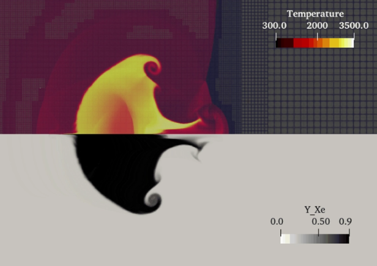

Reactive flows
Reactive Shock-Bubble Interaction
GPU-accelerated adaptive mesh refinement for high-fidelity compressible reactive flow modeling.
View the full gallery
Block-structured adaptive mesh refinement
AMReX is a performance-portable framework for building massively parallel adaptive mesh refinement applications across CPUs, GPUs, and advanced HPC systems. AMReX is an open source project of the High Performance Software Foundation (HPSF) under the Linux Foundation. AMReX is available under a BSD-3-Clause license.
Featured science
A few examples from the AMReX gallery show the range of applications built on block-structured adaptive mesh refinement.
Framework capabilities
Block-structured AMR concentrates resolution where simulations need it most.
Applications run across MPI, OpenMP, CUDA, HIP, SYCL, and hybrid execution models.
Particle data structures and embedded boundaries support complex multiphysics workflows.
AMReX includes capabilities for linear solvers, FFT, I/O, profiling, visualization, and application development.